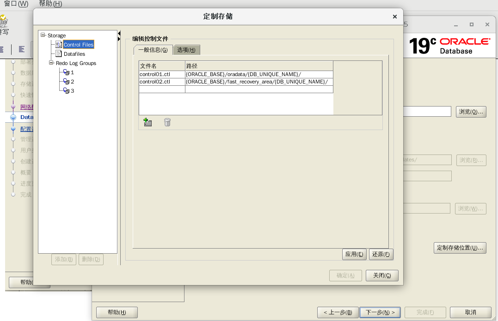
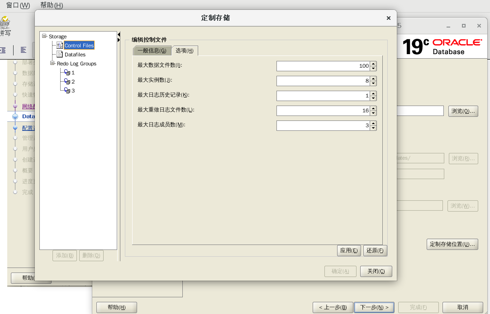
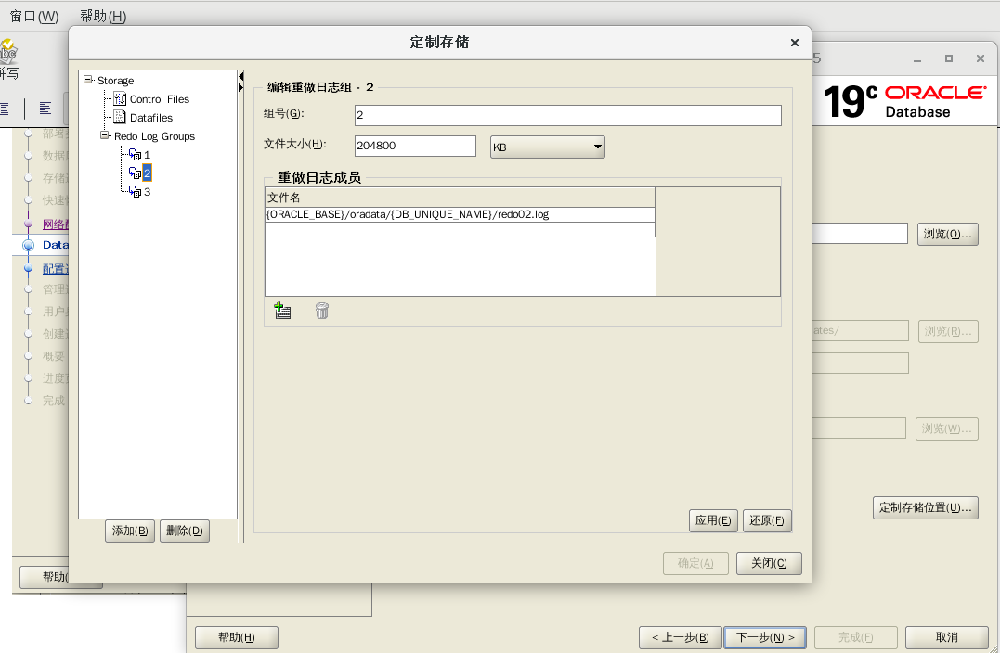

Oracle上机练习六: 完整的数据创建及维护流程
酒店管理系统数据库开发实例
记住： LINUX下面再次创建数据库需要做以下操作
1.$dbca
//安装数据库ORAHOTEL，本次上机有详细过程！！！！！！
2. 配置listener.ora
增加下面内容：
ORAHOTEL =
(DESCRIPTION_LIST =
(DESCRIPTION =
(ADDRESS = (PROTOCOL = TCP)(HOST
= localhost)(PORT = 1522))
(ADDRESS = (PROTOCOL = IPC)(KEY =
EXTPROC1522))
)
)
配置tnsnames.ora： 增加下面内容：
LISTENER_ORAHOTEL =
(ADDRESS = (PROTOCOL = TCP)(HOST = localhost)(PORT =
1522))
ORAHOTEL =
(DESCRIPTION =
(ADDRESS = (PROTOCOL = TCP)(HOST =
localhost)(PORT = 1522))
(CONNECT_DATA =
(SERVER = DEDICATED)
(SERVICE_NAME = orahotel)
)
)
最终成功的文件（SUREWTS with two instance on one Oracle 19.3）：
CENTOS 7.9
listener.ora
tnsnames.ora tnsnames.ora
3. 改下面的（重要！！！！！）
$ export ORACLE_SID=drugdb
$ export ORACLE_UNQNAME=drugdb
$ export ORACLE_SID=orahotel
$ export ORACLE_UNQNAME=orahotel
4. ./lsnrctl start orahotel
5. sqlplus>startup(其余操作要记得哟！！！)
SQL> show pdbs
CON_ID CON_NAME
OPEN MODE
RESTRICTED
---------- ------------------------------ ---------- ----------
2 PDB$SEED
READ ONLY NO
3 PDBHOTEL1
MOUNTED
4 PDBHOTEL2
MOUNTED
5 PDBHOTEL3
MOUNTED
6 PDBHOTEL4
MOUNTED
//看看是不是有四个PDB？？？？？？？？？？？（后面会创建的哟！！！！）
SQL>
6. 启动sqldeveloper:
创建数据库的连接

看到： 成功了没？？？？？？？
7. https://localhost:5501/em：
看看能不能连上？？？（刚安装完ORAHOTEL时是可以的哟！！！！）
上机目的:
上机环境:
上机内容:
一 系统需求分析
二 设计系统E-R图
三 创建数据表
四 创建系统视图
五 创建系统存储过程
六 备份及恢复
上机操作过程
一 系统需求分析
酒店管理系统拟采用Tomcat作为网页服务器, 基于JSP与Oracle 19.3数据库进行开发的Web应用程序。
系统使用三层架构开发模式:
数据库作为架构中的一个底层;
表现层（也就是Web界面）做为架构中的顶层;
数据访问层则处于一个中间层。
Web应用程序页面不再直接与后台的数据库相连接，而是直接与中间数据访问层相关联，中间层的数据访问层直接与数据库相连接，从数据访问层中发送
相关SQL语句到数据库，数据库执行相关的SQL语句后，将执行结果返回到数据访问层。
本系统主要的需求是能够完成对小型酒店日常的客房管理活动，系统主要面向的用户对象是前台接待人员。系统的具体需求分析如下：
(1)
用户必须先从登录界面进入系统，在登录页面输入用户名、密码和验证码，通过身份验证后，才可以进入系统的首页。如果未能通过系统的身份验证
，系统自动给出登录错误的提示信息。
(2) 用户通过本系统可以为客人进行入住登记的办理。
(3) 用户可以为客人进行退房的操作。
(4) 用户能够查询住店客人的各种相关的详细信息。
(5) 用户可以对酒店的客房类型进行操作。包括对新客房类型的添加和对原有客房类型进行修改。
(6) 同样，用户能够对酒店的房间进行操作。包括对新房间的添加、对原来房间的修改和删除。
(7) 用户还可以对酒店客房的状态进行修改操作。
(8) 用户还能够为客人进行房间的预定操作。
(9) 用户能够根据相应的查询条件对酒店客房的信息进行查询，包括客房的房态、客房的预定情况等。
(10) 用户可以查询指定时间内的客房收入情况。
(11) 用户也可以浏览酒店的介绍和新闻。
(12) 用户能够修改登录系统的验证密码；
(13) 当用户第一次登录前，必须先进行注册。设置登录时使用的用户名和密码以及保存个人的相关信息。
二 创建Oracle数据库: orahotel
//这里创建数据库与安装Oracle时的那个稍微有点不一样！
SQL Developer 不能用于创建Oracle数据库，只能用来连接已经创建的数据库，数据库的建立要通过Database
Configuration Assistant（DBCA）来完成。
图形法
$dbca
//打开Database Configuration Assistant对话框的欢迎界面，选中第一项： 创建数据库
999

创建模式：
RAC是real application cluster的缩写，译为“实时应用集群”，
是Oracle新版数据库中采用的一项新技术，是高可用性的一种，也是Oracle数据库支持网格计算环境的核心技术。
777777
1. 典型配置：
全局数据库名（G）：SID： orahotel
存储类型S: 文件系统/自动存储管理ASM
数据库文件位置D：{ORACLE_BASE}/oradata
/{DB_UNIQUE_NAME}
快速恢复区FRA（A）{ORACLE_BASE}/fast_recovery_area
/{DB_UNIQUE_NAME}
数据库字符集： AL32UTF8 -Unicode UTF-8 通用字符集
管理口令：wtsgyh1972
确认口令：wtsgyh1972
创建为容器数据库E:
可插入数据库名L: pdbhotel
9999

也可以： 点高级配置,下一步 部署类型：

orahotel
SID： orahotel
PDB： 4 个， pdbhotel

存储选项：

快速恢复区：

lishotel 1521 不能用同一个号

oooo set data vault







配置：

管理：

user passwd:


完成配置，正式安装:

progress:

安装完成：

安装完成后：
数据库创建完成，详细信息看日志：
/opt/app/oracle/cfgtoollogs/dbca/orahotel/*.log
全局数据库名： orahotel
系统标识符SID： orahotel
服务器参数文件名：
/opt/app/oracle/product/19.3.000/db_home/dbs
/spfileorahotel.ora
（二进制）
EM Database Express URL: https://localhost:5501/em
口令管理：(看看都有哪些用户，现在没有scott用户了)

打开： https://localhost:5501/em
username: SYS
pwd: wtsgyh1972
Container Name: 不要
点： Log In就可以进入页面了。
命令行法:
$dbca -silent -createDatabase
-templateName General_Purpose.dbc -gdbName orahotel -sid orahotel
-sysPassword wtsgyh1972 -systemPassword wtsgyh1972
-datafileDestination /opt/oracle/oradata/ -characterSet zhs16gbk
-nationalCharacterSet al16utf16 -responseFile NO_VALUE
会提示进程，等待到100%，建库完成
2 创建用户：
SQL>
create user c##hoteldbuser identified by hoteldb123;
用户已创建。
SQL> commit;
提交完成。
3.
二 设计系统E-R图
实体模型就是我们通常所说E-R模型，它是设计数据库的基础。我们使用E-R模型对酒店管理系统的数据进行抽象加工，将实体集合抽象成实体
类型，用实体间关系反映本系统实体间的内在联系。下面根据需求分析设计酒店管理系统的E-R图。
1.住客实体E-R图
住客E-R图中包括的属性为：住客编号、住客姓名、住客性别、住客国籍、住客身份证、住客住址、住客电话、押金、住客房号、住客类别、入住时
间、离店时
间、操作人。这些属性描述的住客实体如下图1所示。

2. 房间实体E-R图
房间E-R图中包括的属性为：房间编号、房号、房间类型、房间状态、是否预定、床位数、是否有电视、是否有空调。这些属性描述的房间实体如下
图所示。

3.房型实体E-R图
房型E-R图中包括的属性为：房型编号、房型名称、房间价格。这些属性描述的房型实体如下图所示。
4.房态实体E-R图
房态E-R图中包括的属性为：房态编号、房态名称。这些属性描述的房态实体如下图所示。

5.预定信息实体E-R图
预定信息E-R图中包括的属性为：预定编号、预定房号、预定人姓名、预订人电话、预定人身份证、预定入住时间、操作人。这些属性
描述的预定信息实体如下图
所示。
6.酒店新闻实体E-R图
酒店新闻E-R图中包括的属性为：新闻编号、新闻标题、新闻内容、发布时间、图片路径。这些属性描述的酒店新闻实体如下图所示。
设计好系统中各种实体E-R图后，就要设计各个实体之间的关系，即E-R模型的关系。在酒店管理系统中，实体与实体间的关系描述如下：
1.
住客实体和房间实体之间存在的是多对多的关系，即：一个住客可以入住多个房间，一个房间可以被多个住客使用。
2.房间实体和房型实体之间存在的是一对一的关系，即：一间房间只能属于一种房型。
3.房间实体和房态实体之间存在的是一对一的关系，即：一间房间只能属于一种房间状态。
4.房间实体和预定信息实体之间存在的是多对多的关系，即：一个预定可以包括多个房间，一个房间可以被多次预定。
以上实体间的关系可以用如下图所示的E-R关系图表示。
三 创建数据表
本酒店管理系统的数据库由两个部分组成。其中，第一部分是我们根据系统需求设计并创建的数据表，第二部分是为了实现ASP.NET
4.0的用户身份的验证和授权，由Visual Studio
2010开发环境自动生成一个自带数据库“ASPNETDB”，所有本系统的用户信息、个性化信息和基本配置等都保存在该数据库的11张数据
表中，表的名
称都以“aspnet_开头”。这里仅介绍第一部分的内容
为满足本系统功能的需要，根据设计好的系统实体E-R模型图，创建“oraHotel”的数据库中的数据表，在创建表的同时还要实现数据的完
整性。
1. 住客信息表（GuestInfo），用来记录酒店住客的各种信息。使用身份证号和房号作为该表的主键。该表的字段结构如下表所述：
创建“GuestInfo”表的语句如下：
CREATE TABLE C##WZT.GUESTINFO (ID NUMBER, NAME VARCHAR2(20), SEX
VARCHAR2(2), NATIONALITY VARCHAR2(20)
, PASSPORTNUM VARCHAR2(20) NOT NULL, ADDRESS VARCHAR2(50),
TELEPHONE NUMBER, ROOMNUM NUMBER NOT NULL
, GUESTKIND VARCHAR2(20), ARRIVALTIME DATE, DEPARTURETIME DATE,
DEPOSIT NUMBER, OPERATOR VARCHAR2(20) ,
CONSTRAINT GUESTINFO_PK PRIMARY KEY (PASSPORTNUM, ROOMNUM
/*设置双主键约束*/
)
ENABLE
);
CREATE TABLE C##HOTELDBUSER.GuestInfo(
Id int GENERATED ALWAYS AS IDENTITY
UNIQUE, /*设置唯一约束*/
Name varchar(20) NOT NULL,
Sex varchar(2) NOT NULL CHECK(Sex='男'
OR Sex='女'), /*设置CHECK约束*/
Nationality varchar(20) NOT NULL,
PassportNum varchar(20) NOT NULL,
Address varchar(50) NOT NULL,
Telephone int NOT NULL,
RoomNum int NOT NULL,
/*设置CHECK约束*/
GuestKind varchar(10) NOT NULL
CHECK(GuestKind ='团队' OR GuestKind ='散客'),
ArrivalTime date default sysdate,
/*设置DEFAULT约束*/
DepartureTime date NOT
NULL,/*设置DEFAULT约束*/
Deposit decimal(10, 2) NOT NULL,
Operator varchar(10) NOT NULL,
CONSTRAINT GUESTINFO_PK PRIMARY KEY
(PASSPORTNUM, ROOMNUM), /*设置双主键约束*/
FOREIGN KEY(RoomNum) REFERENCES
C##WZT.RoomInfo(RoomNum) /*设置外键约束*/
)
/*设置唯一约束*/
ALTER TABLE C##WZT.GUESTINFO ADD CONSTRAINT GUESTINFO_UK1 UNIQUE
( ID ) ENABLE;
/*设置CHECK约束*/
ALTER TABLE C##WZT.GUESTINFO ADD CONSTRAINT GUESTINFO_CHK1 CHECK
(SEX = '男' OR SEX = '女') ENABLE;
/*设置CHECK约束*/
ALTER TABLE C##WZT.GUESTINFO ADD CONSTRAINT GUESTINFO_CHK2
CHECK (GUESTKIND = '团队' OR GUESTKIND = '散客') ENABLE;
INSERT INTO
C##WZT.GuestInfo(Name,Sex,Nationality,PASSPORTNUM,Address,Telephone,ROOMNUM,GuestKind,
DepartureTime,Deposit,Operator)
VALUES
('wrs','男','China','123456','HUST1037',1234323654,12,'团队
',TO_DATE('2021-01-01', 'YYYY-MM-DD'),100.00, 'watashi');
2.酒店新闻表（News）用来记录酒店新闻的信息，新闻编号作为表的主键。该表的字段结构如下表所述：
创建“News”表的语句如下：
CREATE TABLE C##HOTELDBUSER.News(
Id int GENERATED ALWAYS AS IDENTITY PRIMARY KEY
, /*设置主键键约束*/
Title varchar(70) NOT NULL ,
Content varchar(1000) NOT NULL,
Time date NOT NULL,
ImageUrl varchar(70) NULL
)
INSERT INTO C##WZT.News(Title , Content , Time, ImageUrl)
VALUES ('Today is 1111 day', 'Happy 1111 day',
TO_DATE('2021-01-01', 'YYYY-MM-DD'), 'http://www.imgurl.io');
3.预定表（Reservation），用来记录预定客房的信息。预定编号是主键。该表的字段结构如下表所述：
创建“Reservation”表的语句如下：
CREATE TABLE C##HOTELDBUSER.Reservation(
Id int GENERATED ALWAYS AS IDENTITY PRIMARY
KEY, /*设置 主键键约束,自动增号*/
RoomNum int NOT NULL,
Name varchar(20),
Telephone varchar(100) NOT NULL,
IdCard varchar(50) NOT NULL,
ArrivalTime date NOT NULL,
Operator varchar(10) NULL,
FOREIGN KEY(RoomNum) REFERENCES C##WZT.RoomInfo
(RoomNum) /*设置外键约束, 需要将C##WZT.RoomInfoZ中的RoomNum设为主键*/
）
INSERT INTO C##WZT.Reservation(RoomNum, Name, Telephone, IdCard,
ArrivalTime) VALUES (12, 'wtsdd', '13989099876', 'hust123',
TO_DATE('2021-01-01', 'YYYY-MM-DD'));
12c推出了varchar2的可扩展特性，从4000B增加到了32727B。许多超过4000B的文本内容除了使用CLOb字段，现在可
以考虑使用扩展后的varchar2。但是扩展操作不是Oracle12c默认支持的，需要手工开启才能生效。
alter system set max_string_size=EXTENDED scope=both;
4.房间信息表（RoomInfo）:用于记录酒店房间的详细信息。
选择房间编号最为主键。该表的字段结构如下表所述：
创建“RoomInfo”表的语句如下
CREATE TABLE C##HOTELDBUSER.RoomInfo(
Id int GENERATED ALWAYS AS IDENTITY
UNIQUE, /*设置唯一约束, 可以不用： constraint name_unique
unique(Id)*/
RoomNum int NOT NULL PRIMARY
KEY,
/*设置主键约束*/
Kind int NOT NULL,
Status int NOT NULL,
/*设置CHECK约束*/
Reservation varchar(5) NOT NULL
CHECK(Reservation ='Yes' OR Reservation ='No'),
Bed int NOT NULL,
/*设置CHECK约束*/
TV varchar(5) NULL CHECK(TV ='有' OR TV
='无'), /*设置CHECK约束*/
AirCondition varchar(5) NULL CHECK(AirCondition
='有' OR AirCondition ='无'),
FOREIGN KEY(Kind) REFERENCES C##HOTELDBUSER.RoomKind(Id),
/*设置外键约束*/
FOREIGN KEY(Status) REFERENCES
C##HOTELDBUSER.RoomStatus(Id) /*设置外键约束*/
)
OK!!!
INSERT INTO C##WZT.RoomInfo(RoomNum, Kind, Status, Reservation,
Bed ) VALUES (12, 2, 34,'Yes',8 );
5.房间类型表（RoomKind）: 用于记录酒店房间的类型信息。
房间类型编号id作为表主键。该表的字段结构如下表所述：
创建“RoomKind”表的语句如下：
CREATE TABLE C##HOTELDBUSER.RoomKind(
Id int GENERATED ALWAYS AS IDENTITY,
/*设置行号自增*/
Kind varchar(10) NOT NULL UNIQUE, /*设置唯一约束*/
RoomPrice decimal(10, 2) NOT NULL,
CONSTRAINT ROOMkind_PK PRIMARY KEY (ID) ENABLE
/*设置主键约束*/
)
OK!
INSERT INTO C##WZT.RoomKind(Kind,RoomPrice) VALUES ('Yes',800.00
);
//1 行已插入。
6.房间状态表（RoomStatu）: 用于存放房间状态的信息。
将房间状态编号作为主键。该表的字段结构如下表所述：
创建“RoomStatus”表：
CREATE TABLE C##HOTELDBUSER.ROOMSTATUS (
ID INT IDENTITY(1,1) NOT NULL,
STATUS VARCHAR2(10) NOT NULL,
CONSTRAINT ROOMSTATU_PK PRIMARY KEY (ID) ENABLE
/*设置主键约束*/
);
/*设置唯一约束*/
CREATE TABLE C##HOTELDBUSER.ROOMSTATUS (ID INT NOT NULL PRIMARY
KEY, STATUS VARCHAR2(10) NOT NULL);
/*也还可以在表创建完成后手动的通过修改表的方式来增加约束设置唯一约束*/
ALTER TABLE C##HOTELDBUSER.ROOMSTATU ADD CONSTRAINT ROOMSTATU_UK1
UNIQUE (STATUS) ENABLE;
or
ALTER TABLE C##HOTELDBUSER.ROOMSTATU ADD CONSTRAINT ROOMSTATU_UK1
UNIQUE (STATUS);
//不要ENABLE一样的作用
或完整SQL句子:
CREATE TABLE C##HOTELDBUSER.ROOMSTATUS (
ID INT NOT NULL
GENERATED ALWAYS AS IDENTITY,
STATUS VARCHAR2(10) NOT NULL,
CONSTRAINT ROOMSTATU_PK PRIMARY KEY (ID)
ENABLE,
constraint name_unique unique(STATUS)
);
实现行号自增： 类似SYBASE的 IDENTITY(1,1)
注：ORACLE 12C之前的版本中,要实现列自增长,需通过序列+触发器实现, ORACLE12C 引入Identity
Columns新特性,从而实现了列自增长功能。
最终完整的语句：
CREATE TABLE C##HOTELDBUSER.ROOMSTATUS (
ID INT GENERATED ALWAYS AS IDENTITY, /*设置行号自增*/
STATUS VARCHAR2(10) NOT NULL,
CONSTRAINT ROOMSTATU_PK PRIMARY KEY (ID) ENABLE, /*设置主键约束, 可以不要ENABLE*/
constraint name_unique unique(STATUS) ENABLE /*设置唯一约束，可以不要ENABLE*/
);
Table C##HOTELDBUSER.ROOMSTATUS 已创建
建表的时候自动生成了一个sequence, 查查看：
SELECT a.name AS table_name,b.name AS sequence_name FROM sys.idnseq$ c
JOIN obj$ a ON c.obj# = a.obj# JOIN obj$ b ON c.seqobj# = b.obj#
where a.name='ROOMSTATUS';
看看是不是有个序列名？？？
测试插入数据：
ALTER USER "SYS" QUOTA UNLIMITED ON "USERS";
ALTER USER "C##HOTELDBUSER" QUOTA UNLIMITED ON "USERS"; //没有这句，可能会报没有USERS表空间的权限！！！！
INSERT INTO C##HOTELDBUSER.ROOMSTATUS(STATUS) VALUES ('LEFT');
1行已插入。
INSERT INTO C##HOTELDBUSER.ROOMSTATUS(STATUS) VALUES ('APROACHING');
1行已插入。
可以删除一行，再插入一行，发现ID仍然加1！！！

插入数据顺序:
1. INSERT INTO C##WZT.ROOMSTATUS(STATUS) VALUES
('APROACHING'); //ROOMSTATUS
2. INSERT INTO C##WZT.RoomKind(Kind,RoomPrice) VALUES
('Yes',800.00 ); //RoomKind
3. INSERT INTO C##WZT.RoomInfo(RoomNum, Kind, Status, Reservation,
Bed ) VALUES (12, 1, 1,'Yes',8 );
//这里的: Kind=1, Status=1, 两个1要分别都在RoomKind,
ROOMSTATUS两个表中要都有对应的行的RoomKind.id=1, ROOMSTATUS.id=1;
4.INSERT INTO C##WZT.Reservation(RoomNum, Name, Telephone, IdCard,
ArrivalTime) VALUES (12, 'wtsdd', '13989099876', 'hust123',
TO_DATE('2021-01-01', 'YYYY-MM-DD'));
5. INSERT INTO C##WZT.News(Title , Content , Time, ImageUrl)
VALUES ('Today is 1111 day', 'Happy 1111 day',
TO_DATE('2021-01-01', 'YYYY-MM-DD'), 'http://www.imgurl.io');
6. INSERT INTO
C##WZT.GuestInfo(Name,Sex,Nationality,PASSPORTNUM,Address,Telephone,ROOMNUM,GuestKind,
DepartureTime,Deposit,Operator)
VALUES
('wrs','男','China','123456','HUST1037',1234323654,12,'团队
',TO_DATE('2021-01-01', 'YYYY-MM-DD'),100.00, 'watashi');
1 行已插入。
四 创建系统视图
在本系统的数据库设计中，采用了视图的方式将有各个有关联关系的表的通过SQL语句连接了起来。视图可以隐藏数据的复杂性，带来更改数据的灵
活性，方便用
户的查询和使用。当开发中遇到经常重复的查询和相同数据的复杂SQL语句时，可以将它们建立为视图。本数据库供共建立了5张视图：
1.住客信息视图（vi_guest_room），
住客信息视图显示的是住客和所住房间的信息，它由“GuestInfo”表和“RoomInfo”表通过INNER
JOIN关键字的内连接连接组成。创建该视图的SQL语句如下：
CREATE VIEW C##WZT.vi_guest_room AS
SELECT g.Name, g.Sex, g.Nationality, g.PassportNum,
g.Address, g.Telephone, g.RoomNum, g.GuestKind, g.ArrivalTime,
g.DepartureTime, g.Deposit, g.Operator,
r.Kind, r.Status, r.Reservation
FROM C##WZT.GuestInfo g
INNER JOIN C##WZT.RoomInfo r ON g.RoomNum = r.RoomNum;
测试视图:
select * from C##WZT.vi_guest_room;
OK!
2. 住客信息视图1（vi_guest_room1）
住客信息视图显示的是住客和房间类型的信息并显示中文的类标题。它由“vi_guest_room”视图、“RoomKind”表和
“RoomStatu”表通过INNER JOIN关键字的内连接连接组成。创建该视图的SQL语句如下：
CREATE VIEW C##WZT.vi_guest_room1 AS
SELECT g.roomnum AS 房号, g.name AS 姓名, g.sex AS 性别,
g.nationality AS 国籍,g.passportnum AS 证件号码,
g.telephone
AS 电话, g.guestkind AS 宾客, g.arrivaltime AS 入住日期,
g.departuretime AS 离店日期,
r.RoomPrice
AS 房价, g.deposit AS 押金, r.Kind AS 房间类别, r1.Statu
AS 房间状态, g.reservation AS 预定状态, g.operator AS 操作人员
FROM dbo.vi_guest_room AS g
INNER JOIN dbo.RoomKind AS r ON g.kind = r.Id
INNER JOIN dbo.RoomStatu AS r1 ON g.statu = r1.Id
测试视图:
3. 房间信息视图（vie_roominfo）
房间信息视图显示的房间和房间类型的信息并显示中文的列标题，它由“RoomInfo”表和“RoomKind”表通过INNER
JOIN关键字的内连接连接组成。创建该视图的SQL语句如下：
CREATE VIEW C##WZT.vie_roominfo AS
SELECT a.RoomNum AS 房号, a.Kind AS 房型, a.Statu AS 房态,
a.Reservation AS 预定状态, a.Bed AS 床位, a.TV AS 电视,
a.AirCondition AS 空调, b.RoomPrice
FROM dbo.RoomInfo AS a
INNER JOIN dbo.RoomKind AS b ON a.Kind = b.Id
测试视图:
4.房间信息视图1（vie_roominfo1），
房间信息视图1显示的是房间、房间类型和房间状态的信息并显示中文的列标题。它由“vie_roominfo”视图、“RoomKind”表
和
“RoomStatu”表通过INNER JOIN关键字的内连接连接组成。创建该视图的语句如下：
CREATE VIEW C##WZT.vie_roominfo1 AS
SELECT a.房号, b.Kind AS 房间类型, c.Statu AS 房间状态,
a.预定状态, a.roomprice AS [ 价格]
FROM dbo.vie_roominfo AS a
INNER JOIN dbo.RoomKind AS
b ON a.房型 = b.Id INNER JOIN
dbo.RoomStatu AS c ON a.房态 = c.Id
测试视图:
5. 房间信息视图2（vie_roomkinddistinct）
房间信息视图2显示的是房间和房间类型中不重复的房间并显示中文的列标题。它由“RoomKind”表和“vie_roominfo”视图通
过INNER
JOIN关键字的内连接连接组成。创建该视图的语句如下：
CREATE VIEW C##WZT.vie_roomkinddistinct AS
SELECT DISTINCT a.Kind, a.Id, a.RoomPrice FROM dbo.RoomKind AS a
INNER JOIN dbo.vie_roominfo AS b ON a.Id = b.房型
测试视图:
五 创建系统存储过程
所谓存储过程(Stored
Procedure)，就是一组用于完成特定数据库功能的SQL语句集，该SQL语句集经过编译后存储在数据库系统中。在使用时候，用户通过
指定已经定义
的存储过程名字并给出相应的存储过程参数来调用并执行它，从而完成一个或一系列的数据库操作。
存储过程的创建
Oracle存储过程包含三部分：
过程声明，
执行过程部分，
存储过程异常。
存储过程的优点
存储过程的优点是非常显而易见的。由于存储过程被编译并存储在数据库中，因此在多次执行存储过程时，可以减少语句的解释和分析时间。这主要是
因为，存储过程已被编译为二进制码，并被缓存到内存中。此外，存储过程可以帮助Oracle实现数据保护措施，如安全控制和访问权限。使用存
储过程可以简化应用程序，从而业务逻辑变得更加容易管理和调试。
存储过程是Oracle数据库中重要的一个组成部分。存储过程提供了一种可重用的代码组件，可以将业务逻辑分离出来。同时，由于存储过程已
编译并存储在Oracle数据库中，因此提高了应用程序的性能和执行速度。在合理使用的前提下，存储过程是提高Oracle数据库性能和可维
护性的一个不可或缺的部分。
存储过程创建语法: 可以在sqldeveloper中执行过程编译
create [or replace] procedure 存储过程名（param1 in type，param2 out
type）
as
变量1 类型（值范围）;
变量2 类型（值范围）;
Begin
Select count(*) into 变量1 from 表A
where列名=param1；
If (判断条件) then
Select 列名 into 变量2 from 表A
where列名=param1；
Dbms_output.Put_line(‘打印信息’);
Elsif (判断条件) then
Dbms_output.Put_line(‘打印信息’);
Else
Raise 异常名（NO_DATA_FOUND）;
End if;
Exception
When others then
Rollback;
End;
******************************************************
Java实现调用oracle的存储过程和函数
使用Java实现存储过程的步骤：
1、创建数据表、存储过程
2、引入依赖包、配置数据源
3、Java代码实现“存储过程调用”
存储过程实践
为了提高本系统的性能，酒店管理系统中的SQL查询全部通过使用存储过程的方式来实现，在JSP程序的后台代码中看不到任何的SQL语句，而
是通
过函数进行调用数据库中的存储过程。因为存储过程全部保存在数据库中，为了保证程序的安全性，使用户无法在客户端查看到具体的SQL语句的
内容。本系统中存储过程较多，无法一一介绍，仅列出下面这些有代表性的存储过程。
1. 查询房间类型（pro_roomkind）
该存储过程用于在房间类型管理界面显示所有的房间类型的信息，其T-SQL语句如下：
启动sqldeveloper, 并进入SQL工作区, 输入存储过程语句:
create or replace procedure C##WZT.pro_roomkind
as
begin
SELECT * FROM roomkind;
end;
测试:过程调用（SQL命令行方式下）
SQL>exec C##WZT.pro_roomkind;
//在sqldeveloper的SQL区执行即可
匿名块已完成
2. 查询指定的房间类型（pro_roomcategory）
该存储过程用于在房间类型管理界面，用户查询指定的房间类型的信息，其T-SQL语句如下：
CREATE proc pro_roomcategory
@type int /*传递房间类型编号的参数*/
as
/*根据房间类型的编号，在视图中查询房间类型的信息*/
select * from vie_roomkinddistinct where
id=@type
3.结账（pro_ckeckout）
该存储过程用于在房间管理界面，用户进行结账时的操作，其T-SQL语句如下：
CREATE proc pro_ckeckout
@roomnum int /*传递房号的参数*/
as
delete guestinfo where
RoomNum=@roomnum/*根据房号删除该房
间的住客信息*/
update roominfo set statu=1 where
roomnum=@roomnum/*根据房
号更新该房间的状态
4. 查询指定时段和房号的住客的信息（pro_dateguestinfo）
该存储过程用于在查询住客界面，用户选择入住时间和离店时间后查询该时间段的某房号的住客信息，其T-SQL语句如下：
CREATE proc pro_dateguestinfo
@from datetime,@to datetime ,@room int
/*传递入住时间、离
店时间和房号的参数*/
as
declare @time datetime /*声明局部变量用于获得时间*/
set @time=dateadd(dd,1,@to)
/*获取离店时间后一天的日期并
赋给变量*/
/*根据指定时间段指定房号的住客信息*/
select * from vi_guest_room1 where
入住日期>=@from and 离
店日期<@time and 房号=@room
5.删除房间信息（pro_deleteRoomInfo）
该存储过程用于在房间管理界面，当用户选择房号后进行删除该房间信息的操作。其T-SQL语句如下：
CREATE proc pro_deleteRoomInfo
@room int /*传递房号的参数*/
as
delete roominfo where roomnum=@room
/*根据房号删除房间*/
6. 获得所有新闻的信息（pro_GetAllNews）
该存储过程用于在系统首页，获取酒店新闻的列表。其T-SQL语句如下：
CREATE proc pro_GetAllNews
as
select * from news
7.添加房间信息（pro_insertroominfo）
该存储过程用于在添加房间信息界面，用户输入房间的信息后进行添加的操作。其T-SQL语句如下：
CREATE proc pro_insertroominfo
@room int,@kind int,@statu int,@reser
varchar(10),@bed
int,@tv varchar(5),@air varchar(5)
/*传递要添加的房间各种
信息的参数*/
as
declare @i int
/*声明局部变量用于获取银行的行数*/
insert into
roominfo
values(@room,@kind,@statu,@reser,@bed,@tv,@air)
set @i=@@rowcount
/*将获取的行数赋给局部变量*/
if
@i>0
/*判断是否插入成功*/
return 1
else
return 0
8. 修改房间信息（pro_updateroominfo）
该存储过程用于在修改房间信息界面，用户输入要修改的内容后进行修改的操作。其T-SQL语句如下：
CREATE proc pro_updateroominfo
@room int,@kind int,@statu int,@reser
varchar(5),@bed
int,@tv varchar(5),@air varchar(5)
/*传递要修改的房间各
种信息的参数*/
as
declare @i int
update roominfo
set
kind=@kind,statu=@statu,reservation=@reser,
bed=@bed,tv=@tv,aircondition=@air where roomnum=@room
set @i=@@rowcount
if
@i>0
/*判断是否修改成功*/
return 1
else
return 0
9. 查看所有房间信息（pro_roominfo）
该存储过程用于在管理房间信息界面，显示所有的房间信息。其T-SQL语句如下：
CREATE proc pro_roominfo
as
select * from vie_roominfo
10. 通过房型和房态查询房间信息（pro_roomfare）
该存储过程用于在管理房间信息界面，用户输入房型和房态，查询符合条件的房间信息。其T-SQL语句如下：
CREATE proc pro_roomfare
@kind varchar(10) ,@statu varchar(10)
/*传递房型和房号的参数*/
as
select * from vie_roominfo1 where 房间类型=@kind
and 房间状态=@statu
六 创建触发器
为了对系统中的数据表进行插入、删除、修改等操作时能自动执行一些相关的连续操作，所以，在其中的两张数据表中使用了触发器。但是为了减轻数
据库的负担，
仅设计了两个触发器。
1. 添加预定信息触发器
当往“Reservation”预定信息表中添加预定信息时，同时修改“Roominfo”房间信息表中“reservation”预定状态
字段的值修改
为“Yes”。我们通过使用“FOR INSERT”触发器来实现，具体的T-SQL语句如下：
/*创建预定触发器*/
CREATE trigger C##HOTELDBUSER.[tri_reservation]
on C##HOTELDBUSER.[Reservation]
for insert as
declare @roomnum int /*声明局部变量用于获得预定的房号*/
begin
try
/*进行异常处理 */
begin
tran
/*开始事务 */
select @roomnum=roomnum from inserted
/*从inserted表中获得预定的房号 */
/*更新房间信息表中预定状态*/
update roominfo set
reservation='Yes' where roomnum=@roomnum
commit
tran /*提交事务*/
print '成功'
end try
begin catch
rollback tran /*回滚事务*/
print '失败'
end catch
2. 删除房型触发器
当删除“RoomKind”房间类型表中的某一个房间类型时，同时修改“Roominfo”房间信息表中“kind”房型字段的值修改为
“2”。我们通过使用“INSTEAD OF DELETE”触发器来实现，具体的T-SQL语句如下：
/*创建删除房型触发器*/
Create trigger C##HOTELDBUSER.[tri_roomkind] on
C##HOTELDBUSER.[RoomKind] instead
of delete
as
declare @kind int
/*声明局部变量用于获得要删除的房型编号*/
begin try
begin
tran
/*开始事务 */
select @kind=id from deleted
/*从deleted表中获得要删除的房型编号*/
update roominfo set kind=2 where
kind=@kind /*更新房间信息表中的房型*/
delete from roomkind where
id=@kind /*从房间类型表中删除指定的房型*/
commit
tran
/*提交事务*/
print '成功'
end try
begin catch
rollback
tran /*回滚事务*/
print '失败'
end catch
7. 数据库实施, 运行, 维护
运行运行系统后，出现的是如下图所示的登录界面。用户必须输入用户名、密码和验证码，通过系统身份认证才能使用页面中除注册外的功能。
7.1 启动Tomcat
出现界面:
7.2
当用户登录成功后，就能进入如下图所示的系统首页，在首页中显示了系统的操作菜单，显示了酒店新闻类列表，广告栏和网站公告栏。
在首页中点击菜单中的“客房管理”导航链接，进入如下图所示的房间经营管理界面，可以在该界面中进行房间信息查询等操作。
点击左侧树状菜单中的“房间类型管理”项，可以进入如下图所示的房间类型管理的界面，在该界面中用户可以进行对房间类型查询、修改和添加等操
作。
点击房间类型列表中的“修改”链接，可以进入如下图所示的修改房间类型界面，在该界面中，用户只要输入要修改的房间名称和价格，点击“修改信
息”按钮即可
完成对房间类型的修改操作。
在房间类型管理的界面中，点击房间类型列表下的“添加新的房型”按钮，可进入如下图所示的添加房间类型界面。用户只要输入要添加的房间类型名
称和价格，点
击“添加信息”按钮即可完成对房间类型的添加操作。
8.备份及恢复
3.建立一个返回游标： PKG_PUB_UTILS
--建立一个返回游标
CREATE OR REPLACE PACKAGE PKG_PUB_UTILS IS
--动态游标
TYPE REFCURSOR IS REF CURSOR;
END PKG_PUB_UTILS;
4.创建和存储过程：P_GET_PRICE
--创建存储过程
CREATE OR REPLACE PROCEDURE P_GET_PRICE
(
AN_O_RET_CODE OUT NUMBER,
AC_O_RET_MSG OUT VARCHAR2,
CUR_RET OUT PKG_PUB_UTILS.REFCURSOR,
AN_I_PRICE IN NUMBER
)
IS
BEGIN
AN_O_RET_CODE := 0;
AC_O_RET_MSG := '操作成功';
OPEN CUR_RET FOR
SELECT * FROM STOCK_PRICES WHERE PRICE
EXCEPTION
WHEN OTHERS THEN
AN_O_RET_CODE := -1;
AC_O_RET_MSG := '错误代码:' || SQLCODE || CHR(13) || '错误信息:' || SQLERRM;
END P_GET_PRICE;
5.创建函数：
--创建函数：F_GET_PRICE
CREATE OR REPLACE FUNCTION F_GET_PRICE(v_price IN NUMBER)
RETURN PKG_PUB_UTILS.REFCURSOR
AS
stock_cursor PKG_PUB_UTILS.REFCURSOR;
BEGIN
OPEN stock_cursor FOR
SELECT * FROM stock_prices WHERE price < v_price;
RETURN stock_cursor;
END;
6.JAVA调用存储过程返回结果集
代码示例：JDBCoracle10G_INVOKEPROCEDURE.java
import java.sql.*;
import oracle.jdbc.OracleCallableStatement;
import oracle.jdbc.OracleTypes;
/* 本例是通过调用oracle的存储过程来返回结果集:
* oracle 9i、10G 的jdbc由1个jar包组成：classes12.zip
*/
public class JDBCoracle10G_INVOKEPROCEDURE {
Connection conn = null;
Statement statement = null;
ResultSet rs = null;
CallableStatement stmt = null;
String driver;
String url;
String user;
String pwd;
String sql;
String in_price;
public JDBCoracle10G_INVOKEPROCEDURE()
{
driver = "oracle.jdbc.driver.OracleDriver";
url = "jdbc:oracle:thin:@localhost:1521:ORCL";
// oracle 用户
user = "test";
// oracle 密码
pwd = "test";
init();
// mysid：必须为要连接机器的sid名称，否则会包以下错：
// java.sql.SQLException: Io 异常: Connection
//
refused(DESCRIPTION=(TMP=)(VSNNUM=169870080)(ERR=12505)(ERROR_STACK=(ERROR=(CODE=12505)(EMFI=4))))
// 参考连接方式:
// Class.forName( "oracle.jdbc.driver.OracleDriver" );
// cn = DriverManager.getConnection(
// "jdbc:oracle:thin:@MyDbComputerNameOrIP:1521:ORCL", sUsr, sPwd );
}
public void init() {
System.out.println("oracle jdbc test");
try {
Class.forName(driver);
System.out.println("driver is ok");
conn = DriverManager.getConnection(url, user, pwd);
System.out.println("conection is ok");
statement = conn.createStatement();
// conn.setAutoCommit(false);
// 输入参数
in_price = "3.0";
// 调用函数
stmt = conn.prepareCall("call P_GET_PRICE(?,?,?,?)");
stmt.registerOutParameter(1, java.sql.Types.FLOAT);
stmt.registerOutParameter(2, java.sql.Types.CHAR);
stmt.registerOutParameter(3, oracle.jdbc.OracleTypes.CURSOR);
stmt.setString(4, in_price);
stmt.executeUpdate();
int retCode = stmt.getInt(1);
String retMsg = stmt.getString(2);
if (retCode == -1) { // 如果出错时，返回错误信息
System.out.println("报错！");
} else {
// 取的结果集的方式一：
rs = ((OracleCallableStatement) stmt).getCursor(3);
// 取的结果集的方式二：
// rs = (ResultSet) stmt.getObject(3);
String ric;
String price;
String updated;
// 对结果进行输出
while (rs.next()) {
ric = rs.getString(1);
price = rs.getString(2);
updated = rs.getString(3);
System.out.println("ric:" + ric + ";-- price:" + price
+ "; --" + updated + "; ");
}
}
} catch (Exception e) {
e.printStackTrace();
} finally {
System.out.println("close ");
}
}
public static void main(String args[])// 自己替换［］
{
new JDBCoracle10G_INVOKEPROCEDURE();
}
}
7.开发JAVA调用函数返回结果集
代码示例：JDBCoracle10G_INVOKEFUNCTION.java
import java.sql.*;
import oracle.jdbc.OracleCallableStatement;
import oracle.jdbc.OracleTypes;
/*
/* 本例是通过调用oracle的函数来返回结果集:
* oracle 9i、10G 的jdbc由1个jar包组成：classes12.zip
*/
public class JDBCoracle10G_INVOKEFUNCTION {
Connection conn = null;
Statement statement = null;
ResultSet rs = null;
CallableStatement stmt = null;
String driver;
String url;
String user;
String pwd;
String sql;
String in_price;
public JDBCoracle10G_INVOKEFUNCTION()
{
driver = "oracle.jdbc.driver.OracleDriver";
url = "jdbc:oracle:thin:@localhost:1521:ORCL";
// oracle 用户
user = "test";
// oracle 密码
pwd = "test";
init();
// mysid：必须为要连接机器的sid名称，否则会包以下错：
// java.sql.SQLException: Io 异常: Connection
//
refused(DESCRIPTION=(TMP=)(VSNNUM=169870080)(ERR=12505)(ERROR_STACK=(ERROR=(CODE=12505)(EMFI=4))))
// 参考连接方式:
// Class.forName( "oracle.jdbc.driver.OracleDriver" );
// cn = DriverManager.getConnection(
// "jdbc:oracle:thin:@MyDbComputerNameOrIP:1521:ORCL", sUsr, sPwd );
}
public void init() {
System.out.println("oracle jdbc test");
try {
Class.forName(driver);
System.out.println("driver is ok");
conn = DriverManager.getConnection(url, user, pwd);
System.out.println("conection is ok");
statement = conn.createStatement();
// conn.setAutoCommit(false);
// 输入参数
in_price = "5.0";
// 调用函数
stmt = conn.prepareCall("{? = call F_GET_PRICE(?)}");
// stmt.registerOutParameter(1, java.sql.Types.FLOAT);
// stmt.registerOutParameter(2, java.sql.Types.CHAR);
stmt.registerOutParameter(1, oracle.jdbc.OracleTypes.CURSOR);
stmt.setString(2, in_price);
stmt.executeUpdate();
// 取的结果集的方式一：
rs = ((OracleCallableStatement) stmt).getCursor(1);
// 取的结果集的方式二：
// rs = (ResultSet) stmt.getObject(1);
String ric;
String price;
String updated;
while (rs.next()) {
ric = rs.getString(1);
price = rs.getString(2);
updated = rs.getString(3);
System.out.println("ric:" + ric + ";-- price:" + price + "; --"
+ updated + "; ");
}
} catch (Exception e) {
e.printStackTrace();
} finally {
System.out.println("close ");
}
}
public static void main(String args[])// 自己替换［］
{
new JDBCoracle10G_INVOKEFUNCTION();
}
}